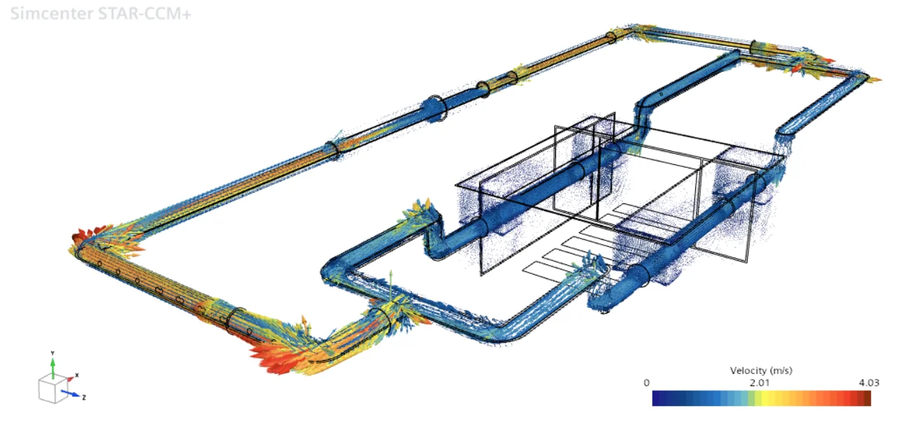

Loop heat pipe battery cooling for electric vehicles
CFD Engineering Intern · Institut Teknologi Sepuluh Nopember (ITS)
Transient 3D CFD study of a Li-ion battery pack cooled by a loop heat pipe with ethanol as the working fluid. I built the STAR-CCM+ model, calibrated it against the lab test rig and used it to study pump flow rate and cell spacing. The results feed a scientific paper prepared by my supervisor.
- Built a 3D transient conjugate-heat-transfer model with multiphase working fluid and validated it against experimental thermocouple data.
- Implemented a closed-loop momentum source to drive the coolant loop.
- Reduced the polyhedral mesh from 1 M to 700 k cells while keeping y+ < 1.
- Located the marginal-efficiency knee of the pump curve to cut electrical power by half.
3 %mean error vs experiment (target < 5 %)
48 → 24 Wpump power at 50 L/min
+1.4 °Cpeak cell temperature penalty
1 M → 700 kcells, y+ < 1
Internship report confidential. Detailed results are reserved for an upcoming journal paper.
